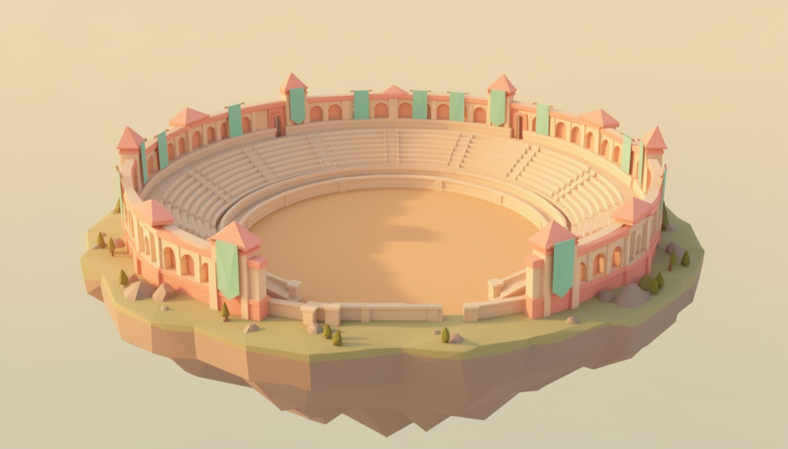

Stablecoins that fired the oracle.
The International Money Foundry welcomes you to Much Reserve World. Lock collateral, mint a K9 currency, and learn the mechanism one guided mission at a time.
Independent extension of Frankencoin mechanics. One independent system per currency. Test assets only; production readiness is not claimed.
Pick a building. See the mechanism. Review before your wallet acts.
One world.
Three ways in.
Start with your goal. Chairpup keeps the mechanism visible and the next step small.
Borrow a K9 currency
Use collateral to open a position and record currency debt.
Visit the Treat Machine → 02Save or back a system
Deposit into savings or inspect pool shares in one currency.
Climb Vault Hill → 03Explore the reserves
Inspect verified current state across all 12 independent systems.
Open Reserve Lab →Move the slider.
See the obligation.
A fictional position makes gross debt, retained reserve, fees, and wallet proceeds visible before you touch real contracts.
Your first mint, in miniature.
Teaching inputs: 20% retained reserve and 1% upfront fee. These are not V2 terms, a quote, or a liquidation threshold.
What is gross debt?
Gross debt includes retained reserve and fees. Wallet proceeds are lower.
Read borrowing costsWhat is retained reserve?
A share assigned to the position instead of arriving in the wallet.
Read reserves and equityWhat is the upfront fee?
A one-time fee taken from gross mint proceeds, separate from retained reserve and ongoing interest.
Read borrowing costsWhere does the gross mint go?
A 50,000 gross mint gives this example treasury 39,500 spendable currency units.
Collateral value is an explicit assumption, not a price feed. Gas and DEX costs are excluded. No fiat conversion or cross-currency reserve is shown. not financial advice · much patience
Three connected moves.
No mystery meat.
Select a stop to see what moves, what stays locked, and what remains your responsibility.
Collateral stays in the position.
Your project proposes terms or uses accepted terms where cloning is available. Tokens deposited into the position secure its currency debt.
The way back: repay according to the position’s terms, then withdraw eligible collateral. Minting creates an obligation your treasury continues to manage.
See the full lifecyclePick a currency.
Look inside.
Each K9 currency has its own token, equity reserve, minting hub, savings, positions, and source bridge.
USD positions owe K9USD. Selecting another currency explores another system; it does not convert debt or balances.
Open the architecture guide · Read current systemsSimple to enter.
Deep when you want it.
Start with the picture. Open the exact mechanism when you are ready.

A market of participants,
not a price oracle.
People propose, veto, challenge, and bid under contract rules.
Enter the Arena◇Overcollateralized
Collateral and debt are different quantities
Each position secures currency debt with collateral under its own recorded terms. Collateral value can change; no ratio is a guarantee.
Read collateral and debt◎Oracle-free
Participants contest a stored price
Challenges and Dutch auctions replace an external liquidation price oracle with an economic mechanism that depends on participants acting.
Follow a challenge⌘Participant governed
Propose, veto, and operate
Qualified governance participants can veto proposals within the applicable window. V2 deployment choices determine the complete trust model.
Explore participant roles▥Reserves & equity
Follow fees, capital, and settlement
Retained minter reserves, system equity, and spendable currency have different roles. Pool shares participate in gains and losses.
Open the reserve mapYour first mission
starts at the gate.
Learn the route, inspect current state, then decide with your own wallet.